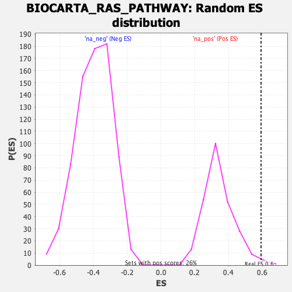

| | | Dataset | DE_genes2 |
| Phenotype | NoPhenotypeAvailable |
| Upregulated in class | na_pos |
| GeneSet | BIOCARTA_RAS_PATHWAY |
| Enrichment Score (ES) | 0.59287536 |
| Normalized Enrichment Score (NES) | 1.7261635 |
| Nominal p-value | 0.01532567 |
| FDR q-value | 0.12085869 |
| FWER p-Value | 0.592 |
Table: GSEA Results Summary
 Fig 1: Enrichment plot: BIOCARTA_RAS_PATHWAY
Fig 1: Enrichment plot: BIOCARTA_RAS_PATHWAY
Profile of the Running ES Score & Positions of GeneSet Members on the Rank Ordered List
| PROBE | GENE SYMBOL | GENE_TITLE | RANK IN GENE LIST | RANK METRIC SCORE | RUNNING ES | CORE ENRICHMENT | | 1 | BAD | | | 102 | 5.980 | 0.1215 | Yes |
| 2 | RELA | | | 137 | 5.593 | 0.2388 | Yes |
| 3 | RHOA | | | 194 | 5.113 | 0.3445 | Yes |
| 4 | AKT1 | | | 298 | 4.442 | 0.4330 | Yes |
| 5 | MAPK3 | | | 484 | 3.743 | 0.5017 | Yes |
| 6 | RAC1 | | | 938 | 2.812 | 0.5343 | Yes |
| 7 | CDC42 | | | 954 | 2.787 | 0.5929 | Yes |
| 8 | CASP9 | | | 2277 | 1.576 | 0.5464 | No |
| 9 | FOXO4 | | | 2765 | 1.304 | 0.5448 | No |
| 10 | PLD1 | | | 3171 | 1.124 | 0.5442 | No |
| 11 | RALGDS | | | 3694 | 0.932 | 0.5325 | No |
| 12 | RAF1 | | | 4886 | 0.597 | 0.4731 | No |
| 13 | NFKB1 | | | 6140 | 0.317 | 0.4040 | No |
| 14 | ELK1 | | | 7053 | 0.145 | 0.3519 | No |
| 15 | RALA | | | 7561 | 0.055 | 0.3223 | No |
| 16 | RALBP1 | | | 9072 | -0.207 | 0.2353 | No |
| 17 | MAP2K1 | | | 11781 | -1.121 | 0.0952 | No |
| 18 | PIK3CA | | | 12907 | -1.721 | 0.0638 | No |
| 19 | PIK3R1 | | | 13173 | -1.874 | 0.0877 | No |
| 20 | HRAS | | | 14020 | -2.508 | 0.0900 | No |
| 21 | CHUK | | | 14423 | -2.905 | 0.1277 | No |
Table: GSEA details [plain text format]

Fig 2: BIOCARTA_RAS_PATHWAY: Random ES distribution
Gene set null distribution of ES for BIOCARTA_RAS_PATHWAY